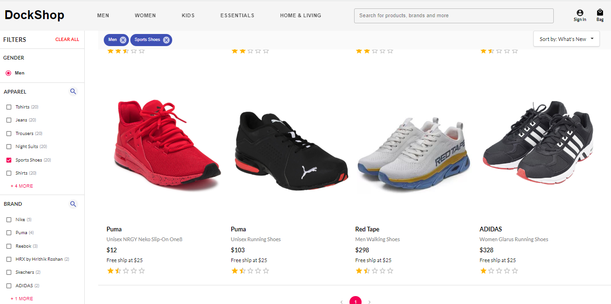
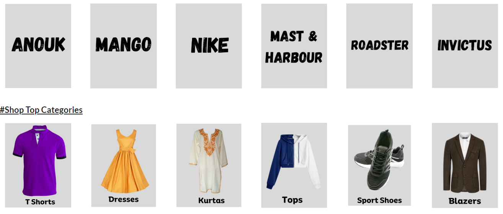
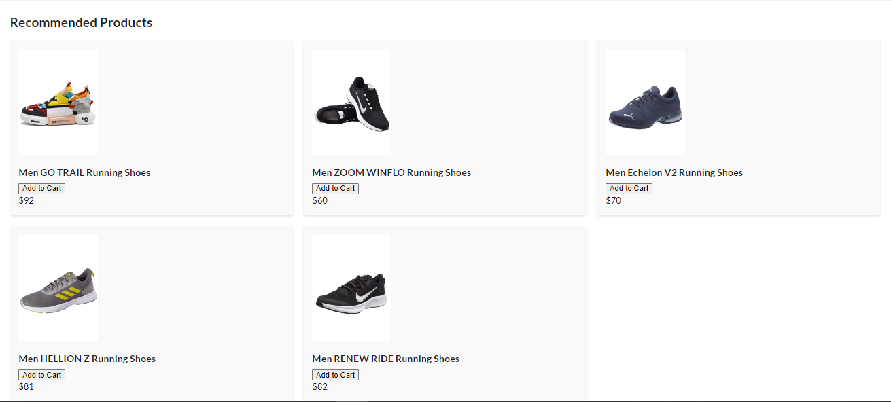
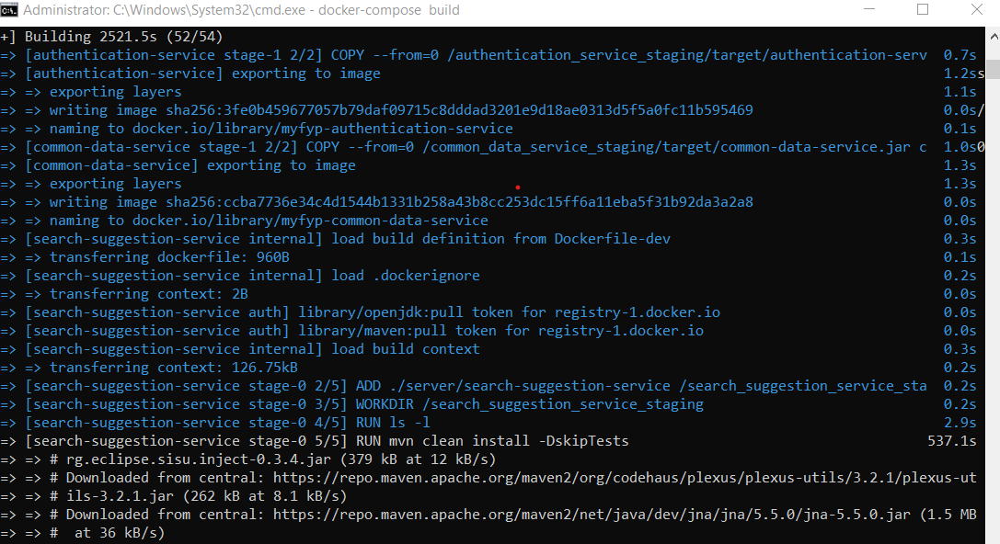
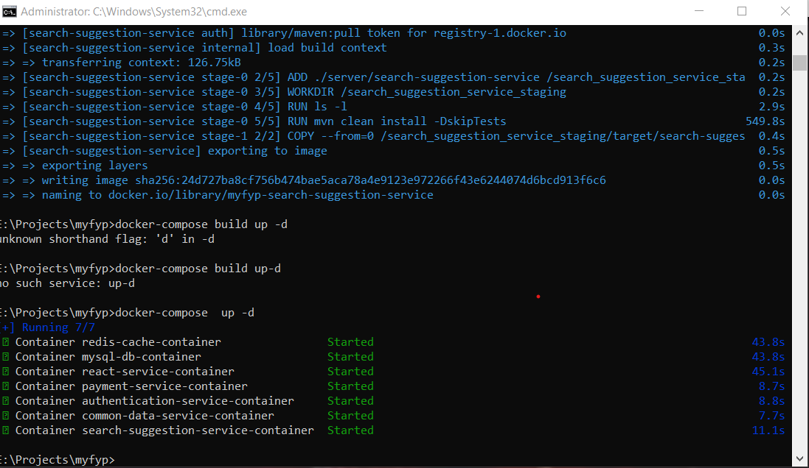

Seeking Master's Degree Programs in Computer Science, Software Engineering, DevOps, or Cloud Computing Abroad

Greetings,
I am on a relentless journey to elevate my expertise in the ever-evolving realms of Computer Science, Software Engineering, DevOps, and Cloud Computing. As I embark on this exciting chapter of academic and professional growth, I am actively seeking opportunities to pursue a Master's Degree in these dynamic fields.
About Me:
I am Mohammad Danyal, a passionate and driven individual dedicated to pushing the boundaries of technological innovation. With a solid foundation in csit, I am eager to delve deeper into advanced concepts and emerging technologies.
Why a Master's Degree?
A Master's Degree is not just a qualification; it's a commitment to excellence. It provides the opportunity to specialize, conduct cutting-edge research, and collaborate with industry leaders. I am driven by the desire to contribute meaningfully to the field and stay at the forefront of technological advancements.
Areas of Interest:
Computer Science (CS): Exploring the theoretical and practical aspects of algorithms, artificial intelligence, and data science to solve complex problems.
Software Engineering (SE): Developing a deep understanding of software architecture, design patterns, and best practices to create robust and scalable solutions.
DevOps: Bridging the gap between development and operations, I aim to streamline processes, enhance collaboration, and implement continuous integration/continuous deployment (CI/CD) pipelines.
Cloud Computing: Embracing the future of computing, I seek to master the principles of cloud architecture, security, and scalability to design and deploy resilient applications.
Why Study Abroad?
Studying abroad is more than an academic pursuit; it's an immersive cultural experience. It offers a global perspective, exposure to diverse thought processes, and the chance to build a global network. I am excited about the prospect of learning in an international environment that fosters innovation and collaboration.
Join Me on This Journey:
I invite you to follow my journey as I navigate the application process, share insights from my experiences, and document the challenges and triumphs along the way. Your support and advice are invaluable as I strive to make a meaningful impact in the world of technology.
Let's connect! If you have recommendations, insights, or if you are on a similar path, reach out. Together, let's shape the future of technology.
Thank you for being a part of this exciting chapter!
Best regards,
Exploring Opportunities in DevOps and Web Development as Intern
Hello there! 👋 I'm Mohammad Danyal, a passionate and aspiring individual eager to dive into the dynamic worlds of DevOps and Web Development. Currently Graduated Bachelor of Science in CSIT at University Of Engineering & Technology Peshawar, Pakistan, I am on the lookout for exciting internship opportunities to further enhance my skills and contribute to innovative projects.
Why DevOps?
In the ever-evolving landscape of technology, I find the fusion of development and operations fascinating. DevOps is not just a methodology; it's a culture that aligns perfectly with my desire to bridge the gap between software development and IT operations. I am excited about automating processes, optimizing workflows, and fostering collaboration to deliver efficient and reliable solutions.
Why Web Development?
Creating beautiful and functional websites is not just a skill; it's an art form. I am captivated by the power of web development to bring ideas to life on the digital canvas. From crafting responsive and user-friendly interfaces to ensuring seamless user experiences, I am eager to immerse myself in the realm of front-end and back-end development.
What I Bring to the Table:
Strong foundation in HTML, JavaScript and Python.
Enthusiasm for learning and adapting to new technologies.
Effective problem-solving skills and attention to detail.
Excellent collaboration and communication abilities.
A mindset geared towards continuous improvement and innovation.
Let's Connect!
I am actively seeking internship opportunities to apply and expand my skills in a real-world setting. If you are looking for a motivated and dedicated intern with a passion for DevOps and Web Development, I'd love to connect with you! Feel free to explore my portfolio to get a glimpse of my projects and capabilities.
Let's embark on a journey of growth and innovation together. If you have a position that aligns with my aspirations, please don't hesitate to reach out. I am eager to contribute to your team and learn from the experiences that lie ahead.
Thank you for considering my application. Let's create something amazing together!
Eduction History
Bachelor Of Science Computer Science & Information Technology at University of Engineering & Technology Peshawar, From Sep-2019 To Feb 2024
Higher Secondary School (Faculty Of Science) Pre-Engineering at Govt Degree College Shabqadar, From 2017 To July 2019
Secondary School (Matric) Science and Arts Subjects, From 2008 To March 2017
Diploma in Information & Technology DIT, From 2018 To 2019
Projects
My first project as an undergraduate student was my final year project: the development of an E-commerce web application using microservices. For detailed information about my project, please visit my project thesis. I have also included some pictures below for your reference.
    
University Reviews
CV/Resume